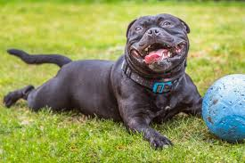
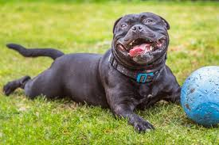

Favorite Pets
- Dogs
Canis lupus familiaris
I like dogs because they are friendly to their owners and are a very loyal pet.
Info on Dogs
 

- Bengal Cats
Felis catus × Prionailurus bengalensis
I like cats in general, but the Bengal cats i like more beacuse they look similar to leopards, and they are also hypoallergenic.
Info on Bengal Cats
- Chickens
Gallus gallus domesticus
Chickens are a fun bird to have around if you have a big yard, they are friendly and funny to watch, plus every now and then you'll get an egg or two.
Info on Chickens
- Rabbits
Oryctolagus cuniculus
Rabbits are a fun, lowkey pet to own, they have low management so you dont need to pay a lot of attention to them, but they are also very comforting.
Info on Rabbits

- Hamsters
Cricetinae
Hamsters are another low management pet to own, but they are also very fun to play with and funny to watch. My favorite thing to see when i see a hamster is when they stuff their cheaks as full as they can.
Info on Hamsters